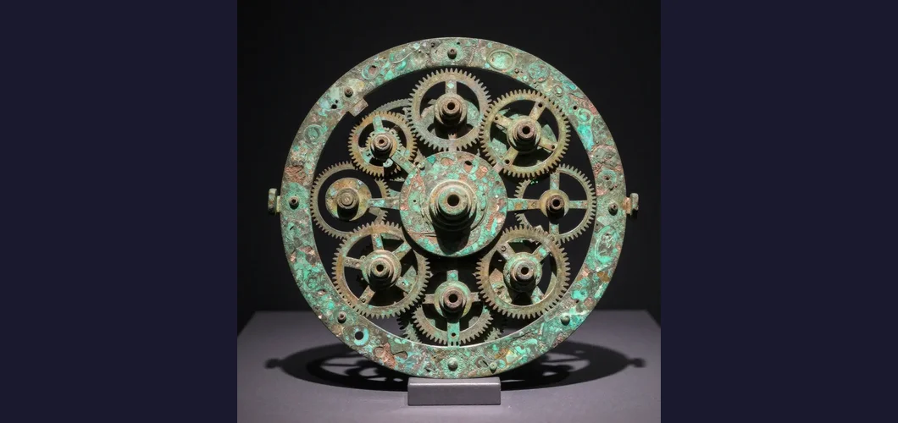

The Antikythera Mechanism: An Ancient Greek Computer 1,500 Years Ahead of Its Time

The Antikythera Mechanism, recovered from a Roman shipwreck in 1901, is the world’s oldest known analog computer — built over 2,000 years ago
In the spring of 1901, a team of Greek sponge divers was working at a Roman-era shipwreck. It lay off the tiny island of Antikythera, a rocky island between Crete and the Peloponnese. From the seabed, the divers lifted a shapeless, rusty lump of bronze about the size of a large book.
The lump was almost overlooked. The wreck dates to about 70–60 BCE. It had already given up great treasures. There were marble and bronze statues, glassware, jewelry, coins, and a seven-foot bronze figure of Hercules. The lump was covered with two thousand years of sea crust. It looked like nothing important.
It was listed and put in a storage crate at the National Archaeological Museum in Athens. Then it was mostly forgotten. It sat in a museum drawer for months. Then someone noticed that the crust had cracked open. Inside were the outlines of tiny, exact bronze gears, with ancient Greek writing on them.
The divers had not found a statue or a tool. They had found a machine. It is the most advanced technical object to survive from the ancient world.
The Antikythera Mechanism, as it came to be called, was an analog computer. That means a machine that works with gears and dials instead of electronics. It was built around 150–100 BCE. It could predict eclipses of the Sun and Moon. It followed the five known planets across the zodiac, the band of sky where they travel. It worked out the dates of the ancient Olympic Games. It even copied the uneven movement of the Moon across the sky.
Nothing like it appeared in Europe for another 1,500 years. The mathematician and historian Tony Freeth calls it “the most extraordinary surviving artifact from the ancient world — and the most mysterious.”
The mechanism challenges what we thought we knew about the ancient Greeks. We are often told that they were brilliant thinkers and mathematicians, but poor engineers. They gave us geometry and drama, not clockwork. The mechanism proves that idea wrong.
It has at least 30 gears that fit into each other. The teeth were cut to a fraction of a millimeter. The gears sat in a wooden case the size of a mantel clock.
It also holds clever mathematics. One example is the Metonic cycle of 235 lunar months. Another is the Saros eclipse cycle of 223 lunar months. A third is the Callippic cycle of 940 lunar months. Nobody expected machines to use these cycles until the great astronomical clocks of fourteenth-century Europe.
So the mechanism seems impossible. But it exists. We can touch it. And we still cannot fully explain how it was made, or who made it.
The story of its discovery begins with sponge divers, not scientists. In the autumn of 1900, a crew of Greek sponge fishermen was sailing home to the island of Syme. Their captain was Dimitrios Kondos. A storm forced them to take shelter near Antikythera.
While they waited for the weather to clear, a diver named Elias Stadiatis went down to the seabed. He found the wreck of an ancient ship. It lay about 45 meters (150 feet) deep. Statues, amphorae, and other objects lay scattered all around.
Kondos told the Greek authorities. In 1900–1901, the Greek Navy ran the first big underwater dig in history.
The work was very dangerous. The divers wore early diving suits and went down to a hostile depth with poor sight. They collected objects by hand. Several divers fell ill with nitrogen narcosis, a kind of dizziness caused by breathing air deep underwater. One diver died.
The haul was spectacular. It had bronze and marble statues, including the famous Antikythera Ephebe and the Philosopher. It had pottery, glassware, coins, and jewelry. It also had the rusty bronze lump that would become the most important find of all.
At first the mechanism was listed as a “bronze mass.” Few people paid attention. In 1902, the archaeologist Valerios Stais looked at it closely. He saw gear teeth and Greek letters showing through the crust. That was when people began to see how important it was.
For decades, scholars could see the mechanism but could not read it. The remains came in 82 pieces, including 30 gear wheels that could be identified. They were too rusty and fragile to take apart or clean.
The breakthrough came in the 1950s. The British physicist and science historian Derek J. de Solla Price studied the mechanism with X-rays. He was the first to see how complex the gear system was. He argued, with strong proof, that it was an astronomical computer. His 1959 paper in Scientific American was called “An Ancient Greek Computer.” It made the mechanism famous around the world.
The next big step came in 2005. The Antikythera Mechanism Research Project was an international team of scientists, astronomers, and historians. They used strong X-ray scans called tomography, and a method called polynomial texture mapping. These let them look inside the rusty pieces more clearly than ever before.
The results were stunning. The team could read writing that had been hidden for two thousand years. In effect, they found a user’s manual written on the machine itself, in ancient Greek. They found new gears. They worked out the layout of the front and back dials.
They confirmed what the device could do. On the front dial it showed the Egyptian civil calendar and the zodiac. Pointers marked the positions of the Sun, the Moon, and the five known planets.
On the upper back dial was the Metonic cycle. It says that 235 lunar months equal 19 solar years. It helped match the Moon’s calendar to the Sun’s.
On the lower back dial was the Saros cycle of 223 lunar months. It was used to predict eclipses of the Sun and Moon. A smaller dial showed the Callippic cycle of 940 lunar months, which equals 76 solar years. It made the calendar more accurate.
There was one more surprise. A dial followed the four-year cycle of the ancient athletic games. These included the Olympic, Nemean, Isthmian, and Pythian Games. This linked the stars to the festival calendar of the Greek world.
Who made the mechanism is one of the biggest questions in the history of technology. It is too advanced to be the work of one unknown craftsman. It must come from a long tradition of making geared astronomical instruments. Several people have been suggested.
Hipparchus of Nicaea (c. 190–120 BCE) was the greatest astronomer of ancient times. His theory of the Moon’s motion is built into the mechanism’s gears. So he is a leading candidate. Hipparchus worked on Rhodes, and the ship that carried the mechanism may have come from there.
Archimedes of Syracuse (c. 287–212 BCE) was a legendary mathematician and engineer. He built models of the heavens and other machines. But he died before the mechanism was made. Still, his ideas may have inspired it. The Roman statesman Cicero wrote that Archimedes had built two sphere-shaped astronomical devices. They were taken to Rome after Syracuse was captured.
The school of Posidonius on Rhodes is another strong candidate. Posidonius (c. 135–51 BCE) was a Stoic philosopher and astronomer. Cicero visited him on Rhodes. He described a device that “at each revolution reproduces the same motions of the sun, the moon, and the five wandering stars.” That sounds very much like the Antikythera Mechanism.
In 2021, a team led by Tony Freeth of University College London published an important paper. It described a new reconstruction of the front dial, the part that showed the Sun, Moon, and planets. The team used the writing on the mechanism as a guide. They built a display of the heavens. It showed the five known planets moving in real time against the zodiac.
This solved one of the last big puzzles. How did the Greeks show the planets’ backward loops? Seen from Earth, Mars, Jupiter, and Saturn seem to move backward for a while. This is called retrograde motion. The answer was clever. Gears rode on top of other gears. This is called epicyclic gearing. The team says it copied the elliptical orbits of the planets with amazing accuracy.
The team also found what may be the earliest known eclipse predictor. It was a spiral scale on the Saros dial. It could predict the exact date, the time, and the type of an eclipse, years ahead. Astronomy this advanced would not be matched until the Renaissance. Greek craftsmen did it with bronze and hand tools more than two thousand years ago.
The mechanism matters for more than its skill. It makes us rethink what ancient Greek engineers could do. It even changes how we see the whole history of Western technology.
Before the mechanism was understood, scholars thought the Greeks were great thinkers who looked down on practical machines. They believed Greek engineering stopped at temples, aqueducts, and simple tools like levers and pulleys. The mechanism proves this wrong.
Some Greek craftsmen had skills like those of clockmakers in eighteenth-century Europe. They could cut gear teeth to within a tenth of a millimeter. They could design complex gear trains with gears riding on gears. And they could build advanced astronomy into a machine.
The mechanism also raises a deep question about lost knowledge. If the Greeks could build analog computers in the second century BCE, why was the skill lost? Why did Europe wait until the fourteenth century CE for similar machines?
The answer probably lies in the fall of the Hellenistic world. The great centers of learning at Alexandria, Rhodes, and Pergamon were destroyed. This happened in the Roman conquest. It happened again later, as Christianity and Islam changed the thinking of the Mediterranean.
The mechanism may be the high point of a tradition that was wiped out over centuries. Its makers may have been killed or scattered. Their knowledge was never written down, so it could not be recovered. In this way, the mechanism is a reminder of what was lost when the ancient world collapsed.
The Antikythera shipwreck is still giving up new finds. In recent years, marine archaeologists have returned to the wreck. They were led by the Greek Ephorate of Underwater Antiquities, with international partners.
They use modern diving tools. These include autonomous underwater vehicles, which are robot submarines. They also use closed-circuit rebreathers, which let divers breathe without making bubbles. With them, they can work at depths the sponge divers could never reach.
New finds include more pieces of statues, human remains, and parts of the ship itself. In 2012, researchers used a metal detector on the seabed. They found what may be more pieces of the Antikythera Mechanism. These bronze pieces could help complete the picture.
Perhaps more pieces still lie on the seabed. There might even be a second, more complete mechanism. This hope keeps the search going. The sea has kept its secrets for two thousand years. It may not be finished revealing them.
The Antikythera Mechanism is the most important technical object to survive from the ancient world. It is also the most humbling. This small, rusty box of bronze gears was lifted from a Roman shipwreck by sponge divers in 1901.
It shows that the ancient Greeks reached a level of machine skill that Europe did not match until the late Middle Ages. That is a gap of more than 1,400 years. It predicts eclipses with accuracy. It tracks the planets across the zodiac. It works out the dates of the Olympic Games. It holds the most advanced astronomy of the Hellenistic world in a machine that fits in your hands.
Yet we do not know who built it. We do not know where it was built. And we do not know how the knowledge to build it was lost. It is a message from a people who were more advanced than we imagined. They were also wiped from history more completely than we like to admit.
The world’s first computer sits in a glass case in Athens. Its gears have been silent for two thousand years. Its makers are unknown. Its secrets are still unfolding. What else could it teach us?
References & Further Reading
Wikipedia: Posidonius — The Rhodian philosopher whose school may have produced the mechanism
Britannica: Antikythera Mechanism — Authoritative overview of the device and its significance
📚 Recommended Reading: Decoding the Heavens: Solving the Mystery of the World's First Computer by Jo Marchant (on Amazon) — As an Amazon Associate, we earn from qualifying purchases.
Editorial note: reconstructions are continuously revised as imaging and inscription studies improve. See our Editorial Policy.